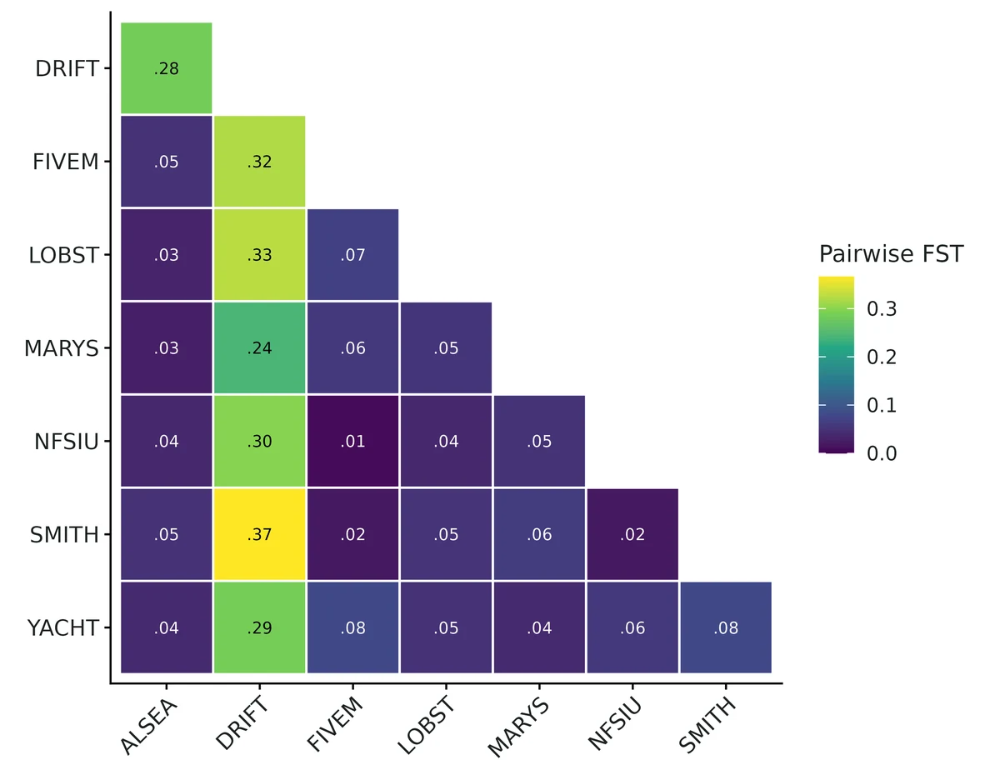
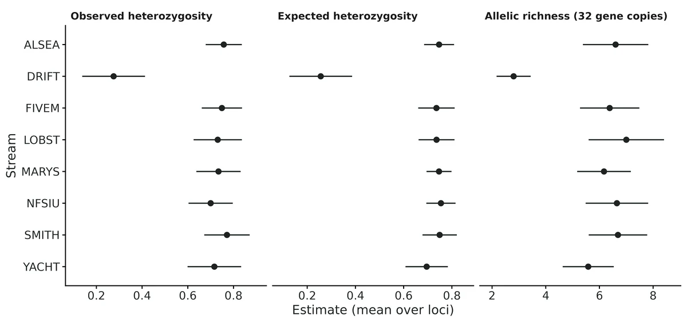
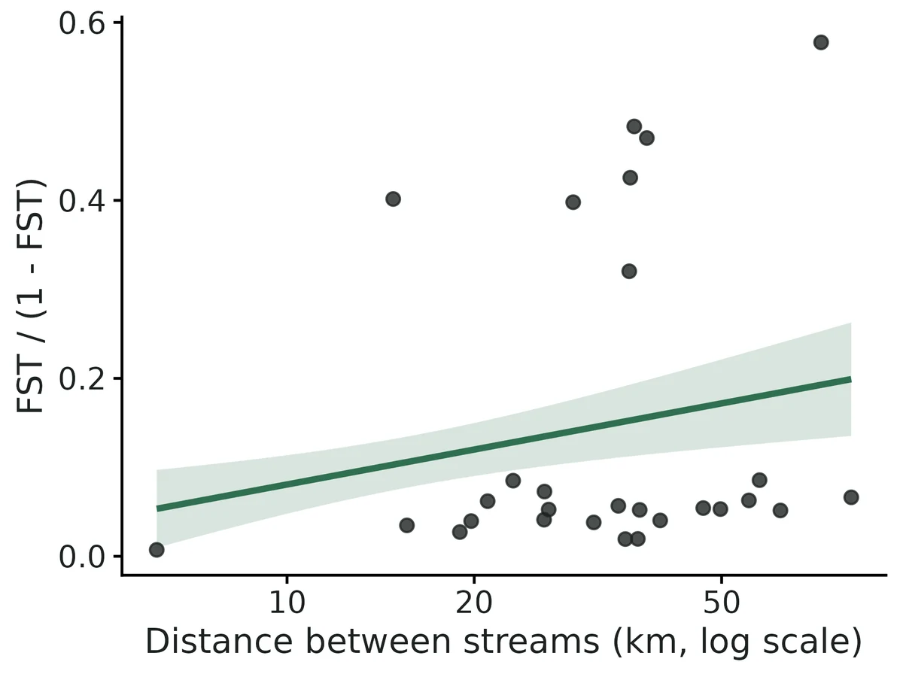
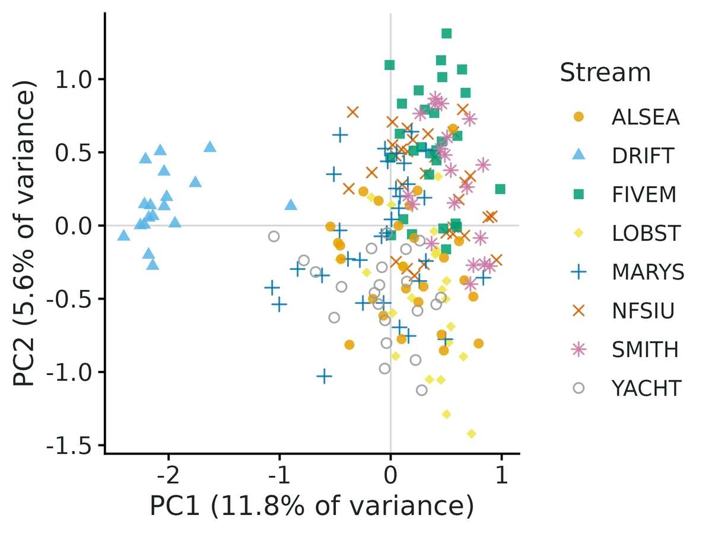

Genetic diversity and population structure (FST, FIS, isolation by distance, DAPC)
Multilocus genotypes (microsatellites, or SNPs coded 0/1/2 or in a VCF) from individuals sampled in several populations or sites; questions about genetic diversity per population (Ho, He, allelic richness, private alleles), inbreeding / Hardy-Weinberg departures (FIS), how differentiated populations are (global and pairwise FST), whether differentiation grows with distance (isolation by distance), and how many genetic clusters there are (PCA, DAPC).
Is this the right analysis?
Use it when
Multilocus genotypes (microsatellites, or SNPs coded 0/1/2 or in a VCF) from individuals sampled in several populations or sites; questions about genetic diversity per population (Ho, He, allelic richness, private alleles), inbreeding / Hardy-Weinberg departures (FIS), how differentiated populations are (global and pairwise FST), whether differentiation grows with distance (isolation by distance), and how many genetic clusters there are (PCA, DAPC). Connectivity and genetic-rescue questions in conservation.
Not for
Effective population size or relatedness/kinship (use popgen-ne); assigning individuals to known source populations for forensics; landscape-resistance models (circuitscape/ResistanceGA); haploid, polyploid or dominant markers (AFLP); selection scans / outlier loci; datasets with one population (no structure to estimate) or fewer than about 3 typed individuals per population.
The data you need
Genotype table (one row per individual with population and loci as 'a/b', two columns per locus, or SNPs 0/1/2) or a VCF plus a sample sheet; optional site coordinates (latitude/longitude or km) for isolation by distance and maps.
What the example's main data file looks like:
| individual | population | Atru01 | Atru01.2 | Atru02 | Atru02.2 | Atru03 | Atru03.2 |
|---|---|---|---|---|---|---|---|
| ATNFSIU-01 | NFSIU | 158 | 158 | 240 | 244 | 114 | 118 |
| ATNFSIU-02 | NFSIU | 158 | 158 | 216 | 240 | 100 | 118 |
| ATNFSIU-03 | NFSIU | 152 | 164 | 240 | 240 | 114 | 118 |
| ATNFSIU-04 | NFSIU | 0 | 0 | 216 | 240 | 108 | 114 |
| ATNFSIU-05 | NFSIU | 144 | 168 | 216 | 216 | 100 | 114 |
Not sure? Use the finder to compare modules.
The worked example
Genetic diversity and population structure of coastal tailed frogs in eight Oregon Coast Range streams (simulated microsatellites)
A field crew swabbed 18-32 frogs (adults and late-stage tadpoles) in each of eight streams in the central Oregon Coast Range, 6-81 km apart. Every frog was genotyped at 12 microsatellite loci (Atru01-Atru12). About 3% of genotypes failed and are recorded as missing.
The question: How genetically diverse is each stream population, is any population inbred or isolated, how differentiated are the streams and does differentiation grow with distance, and how many genetic groups are there?
The data are simulated, so the true answer is known and the analysis can be checked against it.
What the researcher typed
I have microsatellite genotypes for coastal tailed frogs from 8 streams (tailed_frog_microsats.csv, two columns per locus, 0 means missing) and the stream coordinates (tailed_frog_sites.csv). Please tell me how genetically diverse each stream is, whether any population is inbred or isolated, how different the streams are and whether that increases with distance, and how many genetic groups there are. I don't code, so please give me a report with figures and explain what it means for management.
Run it yourself
Download the example data below and unzip it.
Open the unzipped folder in Claude Code (see Install).
Paste the prompt above. The agent checks the files, writes a plan, runs planted truth, fits the model and writes the report. You can compare your results with the ones below.
Contains tailed_frog_microsats.csv, tailed_frog_sites.csv, the settings file (config.yaml), a description of the data and a step-by-step walkthrough.
Study design details
| n pops | 8 |
|---|---|
| n individuals total | 200 |
| n ind per pop | NFSIU: 30; LOBST: 24; FIVEM: 28; DRIFT: 18; MARYS: 32; ALSEA: 26; YACHT: 22; SMITH: 20 |
| n loci | 12 |
| marker | microsatellite |
| missing rate realised | 0.026 |
| distance range km | 6.2, 80.8 |
| ibd distance | log |
Results from the example data

What this means
- Overall differentiation among the 8 sampled populations is FST = 0.094 (95% CI 0.075 to 0.114) (Weir & Cockerham theta). The interval excludes 0, so the samples do not come from one randomly mating population.
- Pairwise FST ranges from 0.007 (95% CI -0.004 to 0.018) between FIVEM and NFSIU to 0.366 (95% CI 0.276 to 0.456) between DRIFT and SMITH; 27 of 28 pairs have intervals excluding 0.
- Genetic diversity: mean expected heterozygosity is 0.678 (95% CI 0.627 to 0.728). It is lowest in DRIFT (0.256 (95% CI 0.126 to 0.386)) and highest in NFSIU (0.755).
- Within populations, FIS = 0.003 (95% CI -0.028 to 0.034). Genotype proportions are consistent with random mating within populations.
- Isolation by distance: FST/(1-FST) increases by 0.0566 (95% CI 0.0217 to 0.0916) per unit of log distance; Mantel r = 0.17, permutation P = 0.240. The evidence is mixed. ... Do not conclude that differentiation increases with distance; re-run without DRIFT (or with more populations) to check.
- Clustering without using population labels (k-means on principal components, number of clusters K chosen by BIC) found K = 2 genetic clusters for 8 sampled populations.
- If the populations behaved like Wright's idealised island model at equilibrium, this FST would correspond to about 2.4 effective migrants per generation (range 1.9 to 3.1 across the FST interval). Treat this only as an order of magnitude.
More figures



Figures are the module's default publication figures, reduced for the web. The report also saves them as PDF and full-resolution PNG.
Planted truth at the example's design
Before trusting the example's results, the module was run on many simulated data sets with the same design and known true values. Each row is one quantity: did the method get it back? (What the thresholds are.)
Every quantity checked passed planted truth at this design.
| This example | 8 stream populations, 12 microsatellites, 18-32 frogs per population (200 total) |
|---|---|
| Design the module was validated at | 9 populations on a 3 x 3 grid, 15 microsatellites, 25 individuals per population |
The example is a little smaller than the validated default (12 vs 15 loci, 8 vs 9 populations, similar sample sizes per population). An independent check at 10 loci found global FST, FIS, diversity and the isolation-by-distance slope well calibrated, but pairwise FST intervals slightly narrow (median coverage 0.933, 3 of 21 pairs just under the 0.905 bound); the module advises at least 8 loci and 10 individuals per population.
These calls sit close to the pass/fail line. With another 200 simulated data sets they could come out the other way, so read them as “about at the limit” rather than as a clear pass or fail.
- Fst_P1_vs_P2 (✓ PASS): coverage 0.910 against a minimum of 0.904.
7 of 7 rows pass; 1 is borderline.
| Quantity | True value | Average estimate | Bias | Allowed bias | Coverage (needed) | Result |
|---|---|---|---|---|---|---|
| Fis_global | -0.00012 | -0 | +83.3% | ±1901.1%† | 0.96 (0.904) | ✓ PASS |
| Fst_global | 0.0757 | 0.0812 | +7.2% | ±10.0% | 0.93 (0.904) | ✓ PASS |
| Fst_P1_vs_P2 | 0.0469 | 0.0465 | -0.9% | ±10.0% | 0.91 (0.904) | ✓ PASS ≈ borderline |
| Fst_P1_vs_P8 | 0.0991 | 0.0975 | -1.6% | ±10.0% | 0.96 (0.904) | ✓ PASS |
| He_mean | 0.743 | 0.743 | +0.0% | ±10.0% | 0.93 (0.904) | ✓ PASS |
| Ho_mean | 0.743 | 0.743 | +0.0% | ±10.0% | 0.94 (0.904) | ✓ PASS |
| ibd_slope | 0.0691 | 0.0682 | -1.3% | ±10.0% | 0.96 (0.904) | ✓ PASS |
Limits that matter
- Pairwise FST intervals are slightly narrow at 12 loci: 4 of 28 pairs had coverage 0.890-0.900 (bound 0.904) under the exact generating process; treat pairwise intervals as approximate.
- Global FST (WC84 theta) weights populations by sample size; with one outlier population sampled at 9% of frogs but 3% of the census, it targets 0.099 rather than the census-weighted 0.065.
- Isolation by distance with 8 populations is driven by one outlier (DRIFT); slope interval excludes 0 but Mantel P = 0.24.
- Nm from FST is an island-model order of magnitude only.
- Intervals describe these populations, not the evolutionary process (He coverage against the model expectation 0.900).
- DAPC/K is a summary, not management units; K = 2 by diffNgroup while BIC is lowest at K = 4-5; not part of the recovery gate.
- Neutral unlinked loci assumed; null alleles, scoring error and sibling sampling not validated.
All known limits from the module's validation record
- He/Ho intervals are conservative when the sample covers much of the genome used as truth (500-SNP design: coverage 1.000). The jackknife treats loci as drawn from an infinite genome; the realised truth there is 800 loci, 500 of them sampled. For a real genome-wide target this is correct, so no change was made. Panmixia He coverage was 0.905 (bound 0.904): at the edge, not a failure.
- Intervals are for these populations, not for the evolutionary process (He fails coverage against the expectation over histories: 0.900).
- Very small samples: 5 individuals per population gives about +24% FST bias at FST = 0.007. Use 10 or more per population.
- With 4 loci the t(3) interval is wide and Ho coverage was 0.89 (n = 100). Use 8 or more loci.
- Neutral, unlinked loci assumed. Linked SNPs make intervals too narrow (not simulated). LD-prune first.
- Not validated: null alleles, scoring error, family-structured samples, unequal Ne or sample sizes beyond the example, non-equilibrium bottlenecks. Nm from FST is reported only as an island-model order of magnitude.
- DAPC/PCA, HWE, AMOVA, private alleles and the Mantel test are not part of the recovery gate. HWE was cross-checked (section 6.4). The DAPC K choice was checked only on the example.
- The IBD slope interval treats population pairs as given and resamples loci and individuals. It does not account for a different random set of sites. The Mantel test is reported beside it, and the report flags when the two disagree.
How this module was validated
- 200 forward-simulated (Wright-Fisher) datasets per design, scored against the realised truth of the simulated populations; closed-form estimators with jackknife intervals, so no MCMC.
- Default design PASSED all 7 estimands (bias at most 2.3%, coverage 0.930-0.955); a harder design (6 populations, 8 loci, 10 individuals) and selfing, SNP, river (1-D) and island designs also passed.
- Negative control: a deliberately naive estimator (uncorrected GST and He) failed 5 of 7 estimands (FST +54%, coverage 0.000).
- False-positive rates under panmixia: FST 0.045, isolation-by-distance slope 0.025, FIS 0.030 (nominal 0.05).
- Cross-checks: numerically identical to hierfstat on 30 datasets; recovered analytic truth from hierfstat's own simulator; HWE tests matched pegas (r = 0.999).
- Power for weak structure (FST about 0.007): 0.87 with 30 loci and 0.98 with 40 individuals per population, but 0.48 with 15 loci and 20 individuals.
- A separate verifier agent wrote its own Python simulator (7 irregularly spaced populations, unequal sizes, 10 loci) that passed all global estimands and 18/21 pairwise FST, reproduced the builder's runs, and improved data messages; verdict: verified with limits.
Every run uses the acceptance gate described on the validation page. The full record follows, section by section, exactly as kept in the module's VALIDATION.md.
Settings and pass/fail rule used for every run
Status (2026-10-19): default design PASSES the recovery gate for every estimand; harder, selfing, SNP, 1-D, island and panmixia designs pass; the deliberately wrong estimator fails (the gate can fail). Known limits are listed at the end.
All runs: bin/Rscript core/run.R recover popgen-structure [--config modules/popgen-structure/validation/<name>.yaml] --nsim 200 --cores 16 (script dev/popgen-structure/run_validation.sh, log logs/popgen-structure_validation.log, outputs results/popgen-structure/validation/<name>/). fast_settings skip HWE, PCA, DAPC and Mantel (not estimands); the point estimates and intervals are computed exactly as in a real fit.
What "truth" is
simulate() runs a forward Wright-Fisher model (demes of Ne diploids, backward migration matrix, optional selfing, K-allele mutation for microsatellites, biallelic SNPs without mutation) for T_gen generations and samples n_ind individuals per deme at n_loci loci.
- Realised truth (default). The genome-wide value for the simulated populations themselves: the same estimators applied to a census of every living individual at the sampled loci plus 300 extra "shadow" loci on the same pedigree. This is what a manager wants to know (these populations, not an average over hypothetical replicate histories).
- Expected truth (
design: {truth: expected}): the exact expectation over histories from the identity-by-descent recursion insimulate.R.
Estimands: Fst_global (WC84 theta), Fis_global (WC84 f), He_mean, Ho_mean, two pairwise FST (neighbours P1-P2 and the most distant pair), ibd_slope (FST/(1-FST) per unit log distance, or per km in 1-D). Gate (core/R/recovery.R, unchanged): |bias| <= max(10% of truth, 3 MC SE) (0.1 x empirical SD when truth = 0), coverage >= 0.904 at nsim = 200. Convergence is not applicable (closed-form estimators), so all 200 count as converged. "power" = proportion of 95% intervals excluding 0.
1. Default design (nsim = 200): PASS
2-D stepping stone, 9 demes on a 3 x 3 grid 25 km apart, Ne = 100, m = 0.05, T = 200 generations, mu = 5e-4, 12-allele microsatellites, 15 loci, 25 individuals per population, 2% missing genotypes.
| estimand | truth (mean) | mean est | rel. bias | RMSE | coverage | CI width | power | gate |
|---|---|---|---|---|---|---|---|---|
| Fst_global | 0.0823 | 0.0822 | -0.1% | 0.0069 | 0.955 | 0.029 | 1.00 | PASS |
| Fis_global | 0.0001 | 0.0005 | (bias 0.0004) | 0.0101 | 0.945 | 0.042 | 0.065 (FPR) | PASS |
| He_mean | 0.725 | 0.726 | +0.2% | 0.016 | 0.940 | 0.067 | PASS | |
| Ho_mean | 0.725 | 0.726 | +0.2% | 0.017 | 0.950 | 0.074 | PASS | |
| Fst_P1_vs_P2 (25 km) | 0.0614 | 0.0601 | -2.3% | 0.013 | 0.930 | 0.061 | PASS | |
| Fst_P1_vs_P9 (71 km) | 0.125 | 0.125 | -0.1% | 0.021 | 0.950 | 0.096 | PASS | |
| ibd_slope | 0.0704 | 0.0711 | +0.9% | 0.013 | 0.945 | 0.052 | 1.00 | PASS |
Time: about 20 s per replicate on one core, most of it simulating 315 loci x 900 individuals x 200 generations. A real fit of 200 individuals x 12 loci with all extras (HWE, PCA, DAPC, Mantel, AMOVA) takes under a minute.
2. Harder design (nsim = 200): PASS
hard_small.yaml: 6 demes, 8 loci, 10 individuals per population, m = 0.1 (weaker structure).
| estimand | truth | rel. bias | coverage | CI width | power |
|---|---|---|---|---|---|
| Fst_global | 0.0415 | -0.7% | 0.945 | 0.054 | 0.90 |
| Fis_global | -0.0002 | (bias 0.0012) | 0.965 | 0.127 | 0.04 (FPR) |
| He_mean | 0.718 | +0.1% | 0.920 | 0.137 | |
| Ho_mean | 0.718 | 0.0% | 0.940 | 0.164 | |
| Fst_P1_vs_P2 | 0.0318 | +1.5% | 0.940 | 0.105 | |
| Fst_P1_vs_P6 | 0.0619 | +1.2% | 0.930 | 0.131 | |
| ibd_slope | 0.0423 | -0.6% | 0.955 | 0.106 | 0.33 |
Unbiased and calibrated, but IBD is detected in only 33% of datasets: 6 populations x 8 loci x 10 individuals is too little for IBD.
3. Other designs (nsim = 200 each): all PASS
| design | key result |
|---|---|
selfing.yaml (selfing rate 0.3, truth FIS = 0.176) | Fis_global mean 0.175 (-0.5%), coverage 0.985, power 1.00; Ho truth 0.581 recovered (+0.1%, cov 0.960); FST cov 0.940 |
snp_island.yaml (500 SNPs, 6-deme island, 20 ind, 5% missing) | Fst 0.0370 vs 0.0370, cov 0.970; Fis cov 0.925, FPR 0.070; ibd_slope truth 0 -> FPR 0.065; He/Ho cov 1.000 (see Known limits) |
linear_1d.yaml (8 demes along a river, 10 km apart, IBD on km) | ibd_slope 0.00233 vs 0.00231 per km (+1.0%), cov 0.960, power 1.00; Fst cov 0.965 |
island_ibd_null.yaml (9-deme island, no distance effect) | ibd_slope truth 0: FPR 0.040, cov 0.955; Fst 0.0391 vs 0.0388, cov 0.950 |
4. Negative controls
Effect = 0 (false-positive rates). panmixia.yaml: one randomly mating population of 900 split into 9 "sites" (FST = 0, slope = 0, FIS = 0). All estimands PASS. Proportion of 95% intervals excluding 0: Fst_global 0.045, ibd_slope 0.025, Fis_global 0.030 (nominal 0.05). Across all designs with true FIS = 0 the FIS false-positive rate was 0.030-0.070; for ibd_slope with true slope 0 it was 0.025-0.065.
The gate can fail. misspec_naive.yaml: the same default simulation (8 individuals per population) analysed with a deliberately wrong estimator (settings: {estimator: naive}: Nei's GST and He without sample-size correction, the common spreadsheet calculation). Gate FAILS for 5 of 7 estimands:
| estimand | rel. bias | coverage | gate |
|---|---|---|---|
| Fst_global | +54% | 0.000 | FAIL |
| Fis_global | -0.069 absolute (true 0) | 0.055; "significant" heterozygote excess in 94% of datasets | FAIL |
| He_mean | -6.2% | 0.215 | FAIL |
| Fst_P1_vs_P9 | -20% | 0.685 | FAIL |
| ibd_slope | -45% | 0.105 | FAIL |
| Fst_P1_vs_P2, Ho_mean | <3% | 0.95 | pass |
Expected-truth run (default_expected_truth.yaml, truth = expectation over replicate histories): estimators unbiased for the theoretical parameter (Fst +0.6%, ibd_slope +1.5%, pairwise FST < 1%, He +0.1%). Coverage 0.935-0.960 for FST, FIS, Ho and slope, but He_mean 0.900 < 0.904 (FAIL). This is expected: the intervals describe the sampled populations (realised truth), and genome-wide He of a finite set of demes still varies between replicate histories. Report intervals as "for these populations", not as estimates of a model parameter (README, Assumptions).
5. How the interval method was chosen
The first version used the usual percentile bootstrap over loci (hierfstat::boot.ppfst style). Against realised truth (160 replicates, dev/popgen-structure/ci_compare2.R, logs popgen-structure_cicmp2.log) it undercovered: default Fst_global 0.894, He 0.906, ibd_slope 0.906; with selfing Fis_global 0.681. Loci are not independent replicates: they share individuals, so inbred or related individuals push all loci the same way. Bootstrapping individuals instead inflated intervals near FST = 0 (panmixia coverage 1.000). The adopted method (README, Uncertainty) adds the shared-individual covariance, measured by a delete-one-individual jackknife, to the delete-one-locus jackknife variance and uses t(L-1) quantiles. Coverage of that method in the same comparison (logs/popgen-structure_cicmp3.log, 200 reps): default 0.930-0.955; selfing Fis 0.985 (was 0.681-0.738); panmixia 0.905-0.975; 200 SNPs 0.940-0.995. The full gate runs above use this method.
6. Cross-checks against independent implementations
Script dev/popgen-structure/crosscheck.R, log logs/popgen-structure_crosscheck.log.
- hierfstat 0.5.11 (same data, independent code). 30 datasets (default microsat, selfing with 10% missing, 200-SNP island). Largest absolute difference: global FST 2.8e-17, FIS 1.4e-16, pairwise FST (
pairwise.WCfst) 5.6e-17, He/Ho (basic.stats) 2.1e-11, allelic richness (allelic.richness) 1.8e-15. Numerically identical. Independent simulator with analytic truth:
hierfstat::sim.genot.t(continent-island, 6 pops x 25 ind, 20 loci, 200 reps). The theta recursion for the order of events in the hierfstat code is used as truth (the formula on its help page assumes drift before migration and is 10% lower at mig = 0.05).mig, f true theta mean FST coverage true FIS mean FIS coverage 0.01, 0 0.2003 0.2012 0.940 0 0.0014 0.97 0.05, 0.1 0.0536 0.0536 0.935 0.1 0.1006 0.97 - Own simulator vs exact recursion vs Wright's island formula (population-level FST from all individuals, 200 reps, 9-deme island, Ne = 100, mu = 0, 500 generations): m = 0.01: recursion 0.1824, simulator 0.1826 (MC SE 0.0010), Wright equilibrium 1/(1+4Nm(d/(d-1))^2) = 0.1649 (not yet at equilibrium); m = 0.05: 0.0393, 0.0396 (MC SE 0.0002), 0.0380. The simulator matches the exact recursion within MC error, and Wright's formula within 4-10%.
HWE tests vs pegas::hw.test (example data, 94 population x locus tests, 2000 Monte Carlo draws each): Pearson r of p-values 0.999, max
difference 0.048 (Monte Carlo noise); identical decisions at 0.05 (4 both, 0 discordant).
7. Power (nsim = 100 per value)
Base weak_power.yaml: 6-deme island, m = 0.2, Ne = 100, true FST about 0.0068 (weak structure, e.g. well-connected streams). Power = 95% interval for global FST excludes 0. Outputs results/popgen-structure/power_loci/, power_ind/.
| microsat loci (20 ind/pop) | 4 | 8 | 15 | 30 |
|---|---|---|---|---|
| power to detect FST = 0.007 | 0.04 | 0.17 | 0.48 | 0.87 |
| FST coverage | 0.95 | 0.99 | 0.92 | 1.00 |
| individuals per pop (15 loci) | 5 | 10 | 20 | 40 |
|---|---|---|---|---|
| power to detect FST = 0.007 | 0.06 | 0.10 | 0.48 | 0.98 |
| FST coverage | 0.99 | 0.99 | 0.92 | 0.97 |
| FST relative bias | +24% | -4% | -7% | -2% |
FIS false-positive rate stayed 0.04-0.09 and ibd_slope (truth 0) 0.02-0.09 over all eight designs. For FST of about 0.04 (hard_small) 6 x 10 x 8 loci already gives 0.90; for FST of about 0.08 (default) power is 1.00. Rule of thumb: weak structure (FST < 0.01) needs about 30 microsatellites or about 40 individuals per population (or a few hundred SNPs).
8. Example fit
bin/Rscript core/run.R fit popgen-structure --config modules/popgen-structure/example/config.yaml --out results/popgen-structure/example. Simulated tailed-frog data (8 streams, 12 microsats, 18-32 frogs per stream). Drift Creek (DRIFT) was simulated with Ne = 30 and almost no immigration; the others had Ne 100-150 and distance-limited dispersal. The report recovers this: DRIFT He 0.256 (0.126-0.386) vs 0.70-0.76 elsewhere, AR 2.8 vs 5.6-7.0, pairwise FST with DRIFT 0.24-0.37 vs 0.007-0.08 among the others, DAPC K = 2 (DRIFT vs the rest), global FIS 0.003 (-0.028 to 0.034), 0/94 HWE deviations. The IBD slope interval excludes 0 (0.057, 0.022-0.092) but the Mantel P = 0.24. The report calls this mixed evidence caused by the DRIFT outlier and recommends re-running without it, which is correct for these data. Interpretation sentences were checked against the table; all seven figures render.
Independent verification (2026-10-19, separate verifier agent)
Scripts: dev/popgen-structure/verify/ (indep_sim.py, fit_indep.R, run_indep.sh, rerun_builder.sh, messy.R, xcheck_hierfstat.R). Logs: logs/popgen-structure_verify*.log. Outputs: results/popgen-structure/verify/.
1. Builder's numbers reproduced. recover re-run for default, panmixia, misspec_naive and selfing (nsim 200, same seeds): replicate estimates and summaries are identical to results/popgen-structure/validation/ (e.g. default Fst_global coverage 0.955, ibd_slope +0.9%/0.945; panmixia FPR FST 0.045, IBD 0.025, FIS 0.030; misspec_naive FST +54%, coverage 0.000).
2. Literature check. ps_wc_abc / ps_wc_pairs match Weir & Cockerham (1984) eqs. for a, b, c (n_c, s^2, h-bar with the (r-1) and (2n-1)/(4n) terms); theta = sum a / sum(a+b+c), f = 1 - sum c / sum(b+c); Nei (1987) Hs = n/(n-1)(1 - sum p^2 - Ho/2n); rarefaction as El Mousadik & Petit (1996); Rousset (1997) slope -> 1/(4 pi D sigma^2) (2-D) and 1/(4 D sigma^2) (1-D); Wright's finite-island formula and Nm = (1/FST - 1)/4. The realised truth in simulate() reuses the fit's estimator code on the census, so step 3 uses truth computed by independent code. On 5 of the independent datasets below (unequal Ne, 3% missing, SMM alleles) the module agrees with hierfstat 0.5.11: |d FST|, |d FIS|, pairwise FST < 6e-17; He/Ho < 7e-5 (basic.stats rounds to 4 digits).
3. Independent planted truth (own Python simulator, no module code; data written as real-data CSVs and read with read_data() -> check_data() -> fit(fast_settings), scored with core summarise_recovery() / recovery_gate(), 208 replicates, coverage bound 0.905). Design kernel: 7 demes at irregular lat/lon (haversine km, 27-110 km apart), migration m = 0.06 spread over all demes by exp(-d/30 km), unequal Ne = 40-120, selfing 0.15, stepwise-mutation microsatellites (mu 1.5e-3), T = 400, 10 loci, 20 individuals per population, 3% missing. Truth: my own identity-in-state formulas on the full census at 410 loci ((Qw - Qb)/(1 - Qb) etc.).
| estimand | truth | mean est | rel. bias | coverage | CI width | power | gate |
|---|---|---|---|---|---|---|---|
| Fst_global | 0.0493 | 0.0493 | +0.03% | 0.942 | 0.036 | 1.00 | PASS |
| Fis_global | 0.0792 | 0.0802 | +1.3% | 0.976 | 0.102 | 0.92 | PASS |
| He_mean | 0.675 | 0.673 | -0.2% | 0.938 | 0.142 | PASS | |
| Ho_mean | 0.621 | 0.619 | -0.3% | 0.947 | 0.148 | PASS | |
| ibd_slope | 0.0252 | 0.0239 | -6.2% (MC SE 3.3%) | 0.962 | 0.060 | 0.32 | PASS |
| 21 pairwise FST | 0.030-0.081 | -4.5% to +6.7% | 0.899-0.962 (median 0.933) | 18/21 PASS | |||
| 7 x He_pop, Ho_pop, Fis_pop | He/Ho < 1.1%; Fis -5.7% to +11% (all within 3 MC SE) | 0.928-0.986 | 21/21 PASS |
The three pairwise failures are coverage 0.899, 0.904, 0.904 against a bound of 0.905 (bias < 4.5%): pairwise FST intervals are slightly narrow at 10 loci (median coverage 0.933; the builder's two gated pairs gave 0.930/0.950).
Design panmixia (630 randomly mating individuals labelled as 7 sites, no selfing, same loci/sampling): all 5 global estimands, 21/21 pairwise and 21/21 per-population estimands PASS. False-positive rates (95% interval excludes 0): Fst_global 0.029, Fis_global 0.058, ibd_slope 0.014.
Negative control on the independent data (estimator: naive): Fst_global +34%, coverage 0.433; Fis_global -33%, coverage 0.856; ibd_slope -52%, coverage 0.562; 0/21 pairwise pass. The gate fails.
4. Usability. Example fit re-run: every interpretation sentence checked against the estimates table (Nm 2.40 = (1/0.0943 - 1)/4, range 1.95-3.09; pairwise min/max pairs and 27/28 excluding 0; DRIFT flagged as below-mean He; 0.4 chance FIS exclusions for 8 populations; IBD "mixed evidence" because slope CI excludes 0 but Mantel P = 0.24). No causal claims; FST wording is descriptive. All 7 figures render; the IBD band and diversity intervals match the table. Messy-data tests (messy.R): NA/-9 codes and half-scored genotypes, a non-numeric allele, swapped lat/lon, duplicated ids, a 2-individual population, wrong id column and an extra column all gave clear messages. Three were improved in io.R (estimates unchanged; example fit identical, selftest PASS after the change):
- wrong population column: the message now lists the file's columns;
- misspelled site in the metadata: the "no coordinates" message now names the unmatched metadata populations (e.g. LOBSTR);
- population names differing only by case/spacing (DRIFT vs Drift) are now a
check_data()problem instead of silently becoming a 9th population. Stale comments inmodule.R/engine.R(said "bootstrap over loci") corrected.
Limits added by this verification.
- Pairwise FST coverage is slightly below nominal with 10 loci (median 0.933, 3 of 21 pairs just under the 0.905 bound). Treat pairwise intervals as approximate; global FST, FIS, He, Ho and the IBD slope are calibrated.
- IBD power with 7 populations x 10 loci x 20 individuals and slope 0.025 is 0.32, similar to the builder's hard design.
- Per-population He/Ho/FIS were not gated by the builder; they pass here.
Verdict: VERIFIED_WITH_LIMITS.
Engine, references and full details
Engine: hand-written Weir & Cockerham (1984) / Nei (1987) estimators (agree with hierfstat to 1e-11), delete-one-locus jackknife + shared-individual covariance (delete-one-individual jackknife) intervals; adegenet/ade4 (PCA, DAPC), vegan (Mantel), poppr (AMOVA, optional).
References
Benjamini & Hochberg (1995) J R Stat Soc B 57:289. El Mousadik & Petit (1996) Theor Appl Genet 92:832. Excoffier, Smouse & Quattro (1992) Genetics 131:479. Frankham et al. (2011) Conserv Biol 25:465. Goudet (2005) Mol Ecol Notes 5:184. Guo & Thompson (1992) Biometrics 48:361. Hurlbert (1971) Ecology 52:577. Jombart (2008) Bioinformatics 24:1403. Jombart, Devillard & Balloux (2010) BMC Genetics 11:94. Kamvar et al. (2014) PeerJ 2:e281. Knaus & Grunwald (2017) Mol Ecol Resour 17:44. Mantel (1967) Cancer Res 27:209. Mills & Allendorf (1996) Conserv Biol 10:1509. Nei (1987) Molecular Evolutionary Genetics. Rousset (1996) Genetics 142:1357. Rousset (1997) Genetics 145:1219. Thia (2023) Mol Ecol Resour 23:523. Weir (1996) Genetic Data Analysis II. Weir & Cockerham (1984) Evolution 38:1358. Whitlock & McCauley (1999) Heredity 82:117. Wigginton, Cutler & Abecasis (2005) Am J Hum Genet 76:887. Wright (1931) Genetics 16:97.